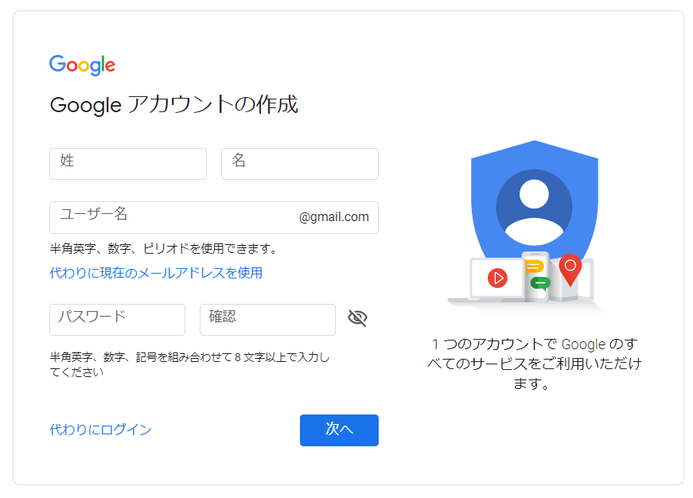
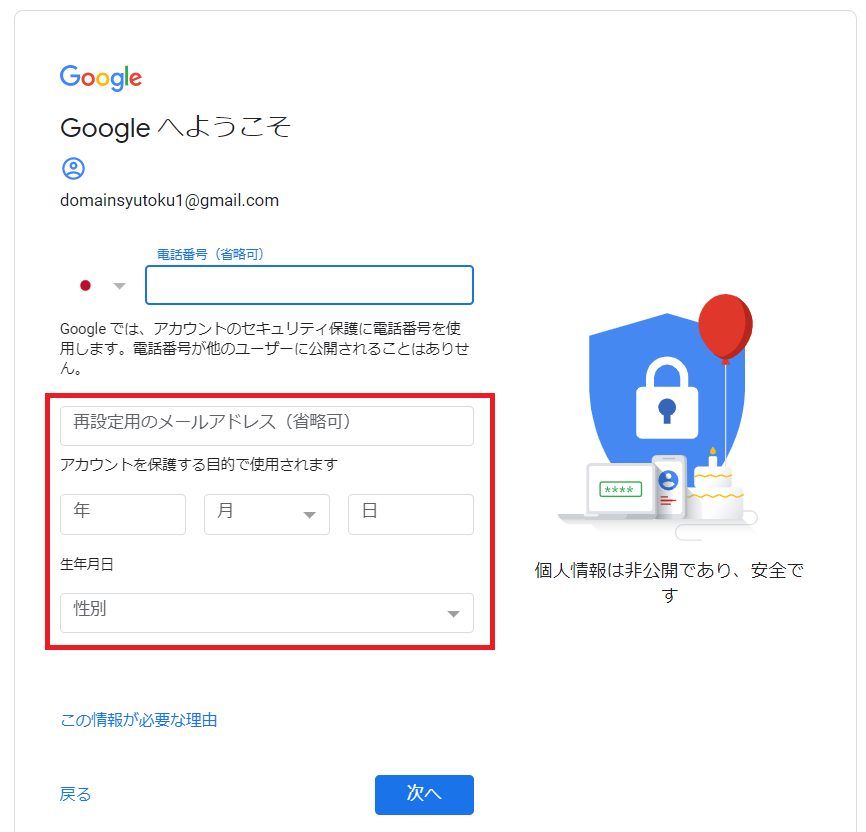
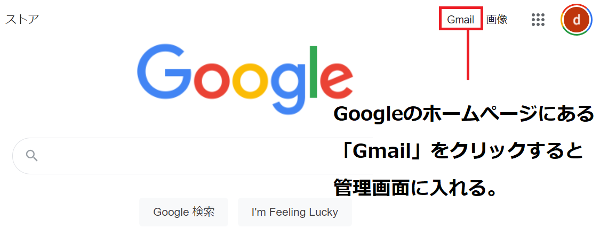
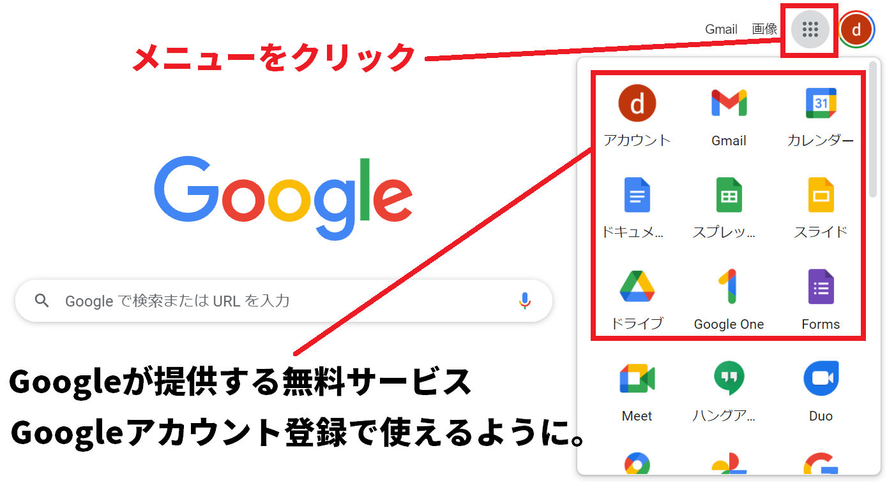

当ページでは、Gmailの作り方とその概要について解説をしています。
また、初めてGmailを使う人でもスムーズに利用頂けるように、管理画面への入り方についても合わせて解説をしています。
まず、Gmailを簡単に説明するとGoogleが提供するフリーメールサービスになります。 そのため無料でメールアドレスの開設が可能になっています。
Gmailを作るのは意外に簡単で、早ければ5分も掛からずに作成することが出来ます。
特別な準備もいりません。「メールアドレス名」や「名前」「生年月日」などの記入だけで作成ができます。
Gmailの大きな特徴の1つが「Webメール機能」になります。 Webメール機能とはどのパソコンでもどのスマートフォンでもGmailを起動できる機能になります。 ネットにさえ繋がっていればGmailを起動できるのでスマートフォンさえ持っていれば、自宅や外出先など場所と問わず簡単にメールが出来ます。
Gmailを作るには「Googleアカウント」というものを作ります。
わかりづらい概念になりますが、Gmailは「Googleアカウント」が提供する10種類以上あるWebサービスの1つでしかありません。
Googleアカウントを作ることで、Gmailを含めた10種類近いWebサービスのデータを管理します。
そのため、Gmailに入る度に入れることになるIDとパスワードは、正確にはGoogleアカウントのIDとパスワードになっています。
では実際にGmailのアカウント（＝Googleアカウント）を作ってみましょう。
Gmailを作るために「Googleアカウント」の作成ページに入りましょう。次のURLをクリックして下さい。

まず最初に「氏名」（性と名）を入れます。本名でもニックネームでも構いません。
ここで入れる氏名は「Gmailでメールを送った時の自分の宛先名」、 「Googleマップでコメントを入れた場合の名前」などで表示されます。
Gmailを作った後でも変更が出来るので、仮の名前で入れておいても問題ありません。
ここで記入するユーザー名が「Gmailアドレス」として実際のメールアドレスになります。
また、Gmail（Googleアカウント）に入る際のユーザーIDにもなります。 この箇所については後から変更することが出来ません。
今後、使っていくメールアドレスになるのでよく考えてアドレス名を決めましょう。
自分で決めたGmailをどうしても変更したい。となった場合に変更することは出来ませんが、Gmailは複数個作ることが出来ます。 その場合、もう1つGoogleアカウントを作りましょう。
8文字以上で「アルファベット」にプラスして「数字」か「記号」を合わせてパスワードを決めましょう。 パスワードも氏名と同じく、後から設定変更することが出来ます。
それぞれを記入したら「次へ」を選択します。
次に、セキュリティ設定を行うため「電話番号」「再設定用アドレス」「生年月日」の情報を記入します。

「電話番号」と「再設定用のメールアドレス」については省略してスキップすることが出来ます （後から追加して設定することもできます）
「生年月日」については、記入必須になります。
電話番号を登録することでセキュリティ強化が出来ます。
これまで使われたことのないデバイス（PC・スマホ）から管理画面に入った場合、登録している電話のショートメールに確認メールが届くようになります。 そのため2重承認がかかりセキュリティが高まります。
Gmailのパスワードがわからなくなった場合、ここで設定したメールアドレスに通知が送られて再設定することが出来るようになります。
省略は出来ますが、パスワードを忘れてしまった場合を考えて出来る限り登録をしておきましょう。
生年月日は必須事項になります。
パスワードがわからなくなり、さらに再設定用のメールアドレスも登録をしていない場合などに、 本人確認事項として「生年月日」を質問されることになります。
性別も必須事項になっています。後から設定画面で変更が出来ます。
各欄への書き込みが終わったら「次へ」をクリックしましょう。
わずかここまででGoogleアカウント（Gmail）を作成することが出来ます。
実際のメールアドレスになる「ユーザー名」さえ決まっていれば、ものの数分でGmailを作ることが出来るでしょう。
ほとんどの要素については、後から設定変更できるようになっているので変更をしたい方はGoogleアカウントの管理ページから変更しましょう。
「ユーザー名」と「パスワード」は管理画面に入る度に入力をします。忘れないよう、メモをするなりして管理しておきましょう。
Gmailを作ったら、さっそく管理画面に入ってみましょう。メールの管理画面に入るには、主に3つの方法があります。
スマートフォンの場合はGmailの専用アプリがあります。
アプリをインストールすることで簡単に管理画面に入れるため、スマートフォンの場合は出来る限りGmail専用アプリをインストールしましょう。
GoogleのホームぺージからもGmailに入ることが出来ます。
パソコン版の画面であれば、下記のように「Gmail」に直接入るURLが用意されています。 そこからGoogleアカウントのIDパスワードを入れてGmailに入りましょう。
同じく画面の右側にあるルービックキューブ型の箇所をクリックすることでも、Gmailに入れるようになっています。

Googleアカウントの専用ページからGmailに入ることも出来ます。
この場合、まずGoogleアカウントの専用ページに入ってから、ルービックキューブ型の箇所をクリックして下さい。 そこからgmailに入れます。
もう少し、Gmailについて説明をしてみます。
Googleアカウントを作るとGmailだけでなく、資料作成ソフトの「Googleドキュメント」、 オンラインストレージの「Googleドライブ」など10種類違いWebサービスが活用できるようになります。
しかも料金は無料で15GBまでデータ容量がもらえます。

Gmailの特徴として99％のスパムメールが撤去されます。そのため迷惑メールに困ることがありません。
さらに、Gmail（Googleアカウント）は1つだけでなく複数のアカウントを作ることも出来ます。 1つのパソコンから作ることができるアカウントの数には制限がありますが、家族分のアカウントも一緒に作ることが出来るでしょう。
Gamali以外にもフリーメールサービスは幾つかあります。 それぞれの特徴とアカウントの作成方法について下記リンク先で紹介しています。
| サービス | アドレス | 容量 | 広告表示 |
|---|---|---|---|
| outlookメール | 「***@outlook.jp」 | 15GB | あり |
| icloudメール | 「***@icloud.com」 | 5GB | なし |
| Yahooメール | 「***@yahoo.co.jp」 | 10GB | あり |

demiglaze
Web制作を始めて約19年になります（HTML/css、Photoshop、Webマーケティング）。2005年から当サイトの運営を開始。 これまでに300個以上のドメインを取得、10社を超えるレンタルサーバーを利用してきました。